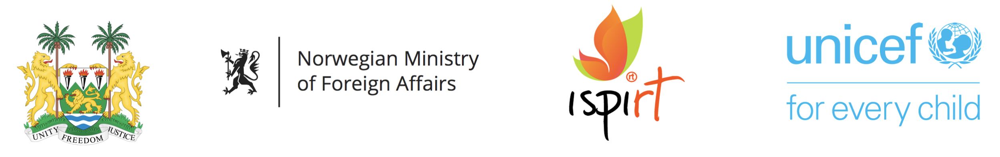

Today, Simple was added to the Digital Public Goods Alliance Registry. The goal of the DPGA and its registry is to promote digital public goods in order to create a more equitable world. Being recognized as a DPG increases the visibility, support for, and prominence of open projects that have the potential to tackle global challenges. To become a digital public good, all projects are required to meet the DPG Standard to ensure that projects truly encapsulate open source principles.
Simple aims to support large-scale hypertension and diabetes control initiatives in low- and middle-income countries. It is already deployed in India, Bangladesh, Sri Lanka, and Ethiopia, where it's used by clinicians to manage over 1.4 million patients with non-communicable diseases.
For us, being recognized as a digital public good means is important as an affirmation of our intent to offer Simple as a free, trusted tool for health systems all over the world. The DPGA's goal to support open source software, open data, open AI models, open standards and open content that adhere to privacy and other applicable laws and best practices, do no harm, and help attain the SDGs is very aligned with our goals too. Simple is developed by open source contributors from all over the world, adhering to the Principles for Digital Development.
The Digital Public Goods Alliance is a multi-stakeholder initiative endorsed by the United Nations Secretary-General, working to accelerate the attainment of the Sustainable Development Goals in low- and middle-income countries by facilitating the discovery, development, use of, and investment in digital public goods.
